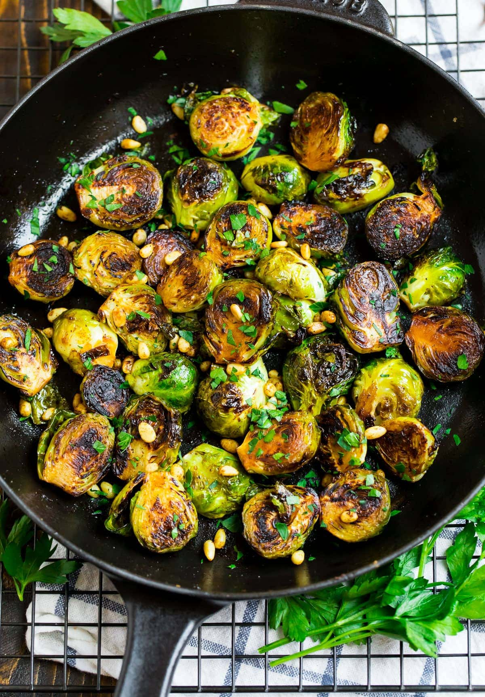

Brussel Sprouts

Roasted Brussel Sprouts with Garlic
This recipe covers how to make oven roasted brussel sprouts with
garlic. This is a very easy dish to prepare and make, and goes with
almost any meat.
Ingredients
- 1lb brussel sprouts
- 4-6 Tbs extra virgin olive oil
- 5 cloves of garlic
- 1 Tbs balsamic vinegar
Steps
- Heat the oven to 400F and trim the bottoms off of the brussel
sprouts
- Place olive oil, garlic, vinegar, and brussel sprouts in a pan on
the stove until slightly brown on the bottom
- Transfer the sprouts to the oven for 10-20 minutes, shaking
every 5 minutes
- Taste and add more preferred seasonings if needed